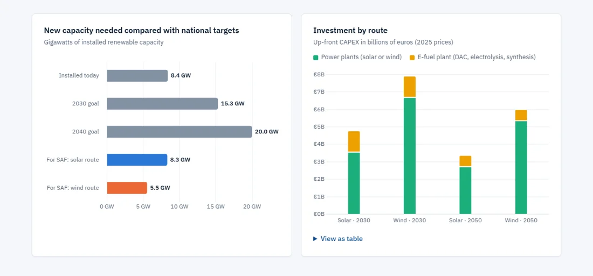

Energy systemsProcess pathway · e-fuels
Sustainable Aviation Fuel for the Philippines
The capacity, land and investment needed to replace all Philippine jet fuel with e-kerosene made from direct-air-captured CO₂.
€4.8–7.9BCAPEX at 2030 prices
28–42%of the 2040 renewables goal on top
Excel · Python · e-fuels · DAC